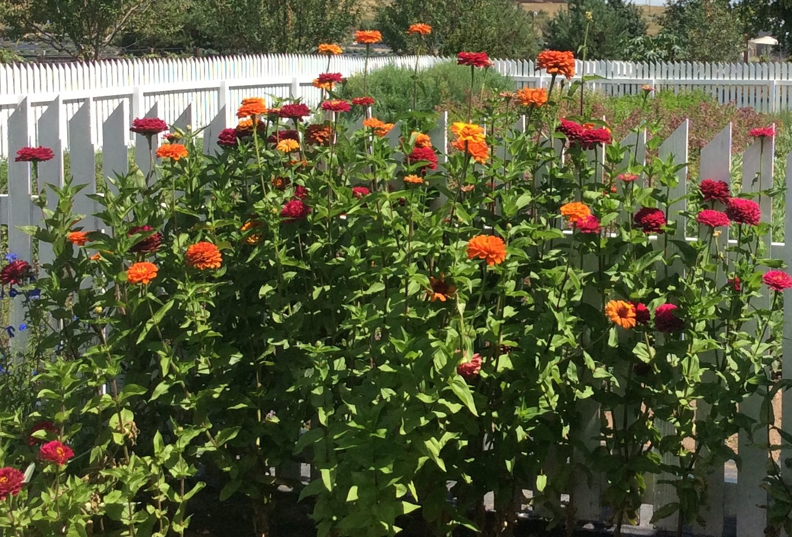

ZINNIAS
Zinnias are an annual. They are among the easiest of flowers to save the seeds from.

- You can collect seeds any time after zinnias have been blooming long enough for the flower head to die, get crispy and develop seed heads.
- Only collect seeds from the healthiest plants with attractive blooms. This will help ensure that the seed is viable and produces attractive healthy plants next year.
- The seed heads are located, in a closed pod, that develops at the base of each flower.
- Cut the dried flower heads off the plants.
- Place the dried flower heads, on cardboard trays to finish drying out. I usually leave them a week or so.
- Break up or crush the seed heads with your hands. Throw away the stem bases that had the seeds attached to them.
- Store the seeds in labeled and dated envelopes. I usually harvest loads of seeds so I place them in cardboard boxes. I have a box labeled for large zinnia seeds and one labeled for small zinnia seeds.
- Seeds can be stored in the refrigerator, in the basement, or in an attached garage. Temperatures need to be above 32 degrees Fahrenheit. The location needs to be cool and dry.
Go to Home Page